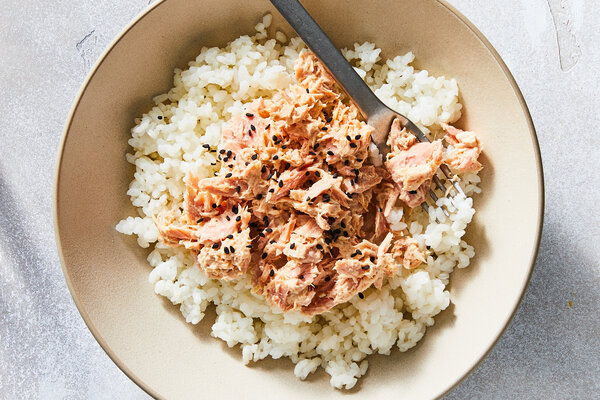

Rice Bowls fit for a king

This recipe I make almost every day, its nutritious because it contains a large amount of protein and calories. Tuna and rice are very inexpensive therefore great for a broke student like me!
Ingredients
- White rice
- 1 can of tuna
- Furikake seasoning
Directions
- Cook your rice, make sure you wash it.
- Add the tuna on top of the rice
- Add your furikake seasoning of your choice on top and mix in!